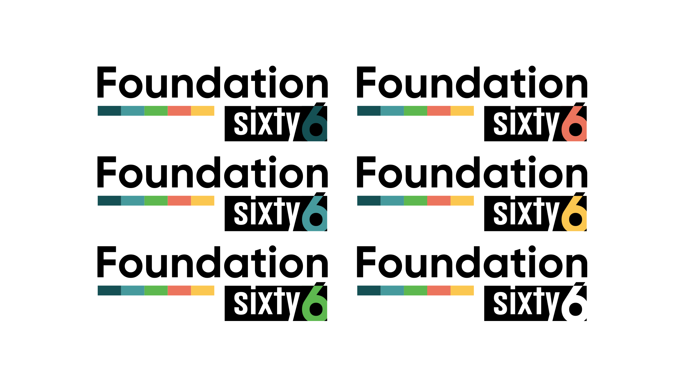
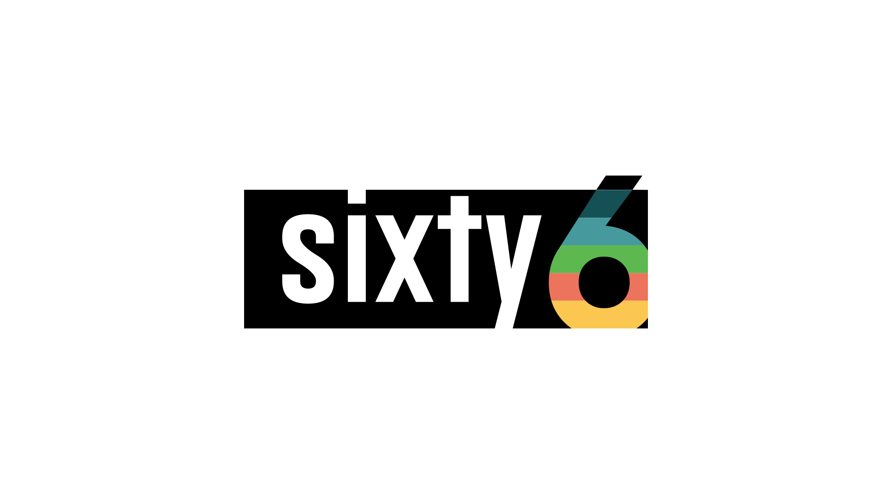
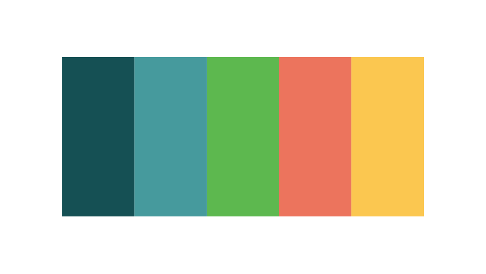
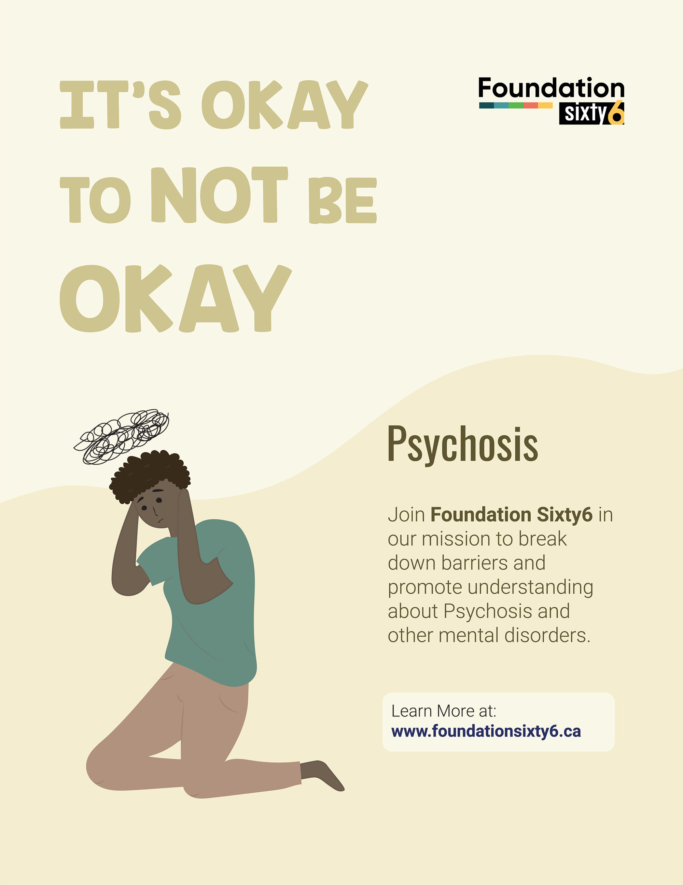
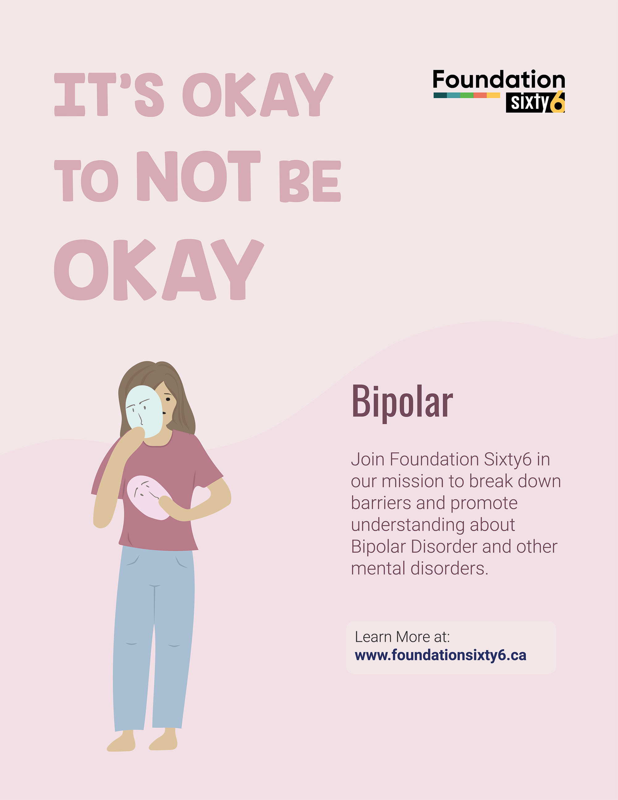
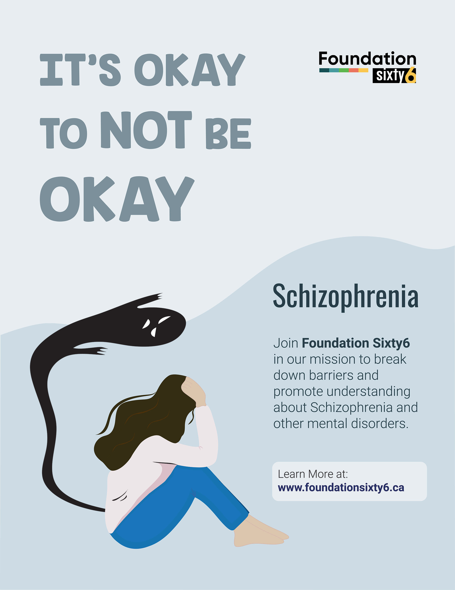

- hero blurb
- move forms
- fix event/news renders
info
Greetings Students,
The key to the purpose/direction of this project is in the mission statement, found in the presentation I shared earlier in the term.
Our Mission
To facilitate improved access to mental healthcare for youth between the ages of 16 and 25 suffering from psychosis, bipolar disorder (BPD), and schizophrenia, specifically within Southwestern Ontario.
We aim to achieve this by creating a network of physicians and mental healthcare providers who will offer counselling services for free, or at a reduced rate, and by generating donations / funds to support that access.
We also aim to create long term employment opportunities that understand the flexibility and support required by people with severe mental health challenges.
Aimee and the team will be providing additional feedback as well, which I will pass on to you when I receive it.
It's important to emphasize the significance of the checkpoint in facilitating constructive feedback and allowing you to refine your work or make necessary pivots. There is still a lot of time to make corrections and adjustments to get back on track.
In 2016, Caelan Hagerty faced a daunting diagnosis of psychotic depression at just 13 years old. It was a journey his family never expected, one filled with uncertainty and fear. Caelan's mother, Aimee, recalls, "We found ourselves confronted by a situation that no parent is prepared for..."
Like many families, they encountered the complexities of a mental health-care system in need of support. But instead of succumbing to despair, they chose to channel their experience into something powerful—a beacon of hope for others in similar situations.
With unwavering determination, Aimee, husband Bill, and Caelan, alongside their dear friends Stuart du Kamp and Russell Levangie, embarked on a mission. They envisioned a world where young individuals battling severe mental health challenges could find solace and support without barriers. And thus, Foundation Sixty6 was born.
Foundation Sixty6 aims to revolutionize mental health care for youth. aged 16-25. Their vision?
To facilitate improved access to mental healthcare for youth who suffer from psychotic depression, bipolar disorder (BPD), schizophrenia, and other severe mental health challenges, with a primary focus in Ontario.
To create a network of compassionate physicians and mental health professionals, offering counseling services either for free or at a reduced rate, ensuring that no one is turned away due to financial constraints.
To create long-term employment opportunities that understand the complexities, flexibility and support required by people living with severe mental health challenges.
My recommendation would be to try and create a few personas and think about how you might directly target them.
e.g.
Tom is 22 year old, who enjoys playing video games and manga. Tom has had difficulties finding employment because of the psychotic episodes he experiences. Tom has found it extremely challenging to locate resources specific to his disorder.
Charles and Betty are ages 56 and 58. Their daughter Katie has just turned 16, and has begun to show signs of schizophrenia. They are unsure of who to turn to and are fearful for their daughters well being.
Sarah is an 18-year-old college student who has been silently battling with symptoms of psychotic depression for the past two years. She often feels isolated and misunderstood, unable to articulate her struggles to her friends and family.
Michael is a 21-year-old university student who was diagnosed with bipolar disorder (BPD) during his freshman year. Balancing his coursework, part-time job, and managing his mental health has become increasingly overwhelming for him.
You could also choose to focus on the recruitment of volunteers and doctors. This could be done through the use of statistics and demonstrating there is a gap and help needed.
It could be as simple and straightforward as: "Feeling overwhelmed? You're not alone. Whether it's psychotic depression, bipolar disorder, or schizophrenia, help is within reach." or "Lost in the darkness of psychotic depression? Let us be your guiding light." - please don't use these.
I'm just trying to get the ball rolling...
target p, s, b specifically
to save time on the featured events ticker, instead of filtering the data. I just set a class name to .feat that the featured articles have. Everything from events is fetched, but display:none. The .feat class items have a display of flex, making them the only visible ones.
Foundation is strong. Foundation is unified. Foundation is comfortable.
Main Logo

Compact Logo

Brand Colors

Spreading awareness, and creation connectons.
<
Full Logo
Our logo is extremely versatile. Choose your accent for any given application. The logo can be used with any of the main colors as the accent on the 6. You can also use it with a white 6, or a transparent 6 (that takes the colour of the background behind the logo)

Compact Logo

Much like the full logo, the compressed "Sixty6" logo can be used in many scenarios. Great for applications that call for a more compact visual element, when the full size logo is a "little too much"
Brand Colors

Sometimes stuff doesn't need a backstory. These colours just look great. They eminate comfort, and familiarity.
Accordingly, they work well in print environments, digital media, as well as web.
This impactful campaign is about spreading awareness, and helping break the stigma surrounding mental health.



Full Logo
Our logo is extremely versatile. Choose your accent for any given application. The logo can be used with any of the main colors as the accent on the 6. You can also use it with a white 6, or a transparent 6 (that takes the colour of the background behind the logo)